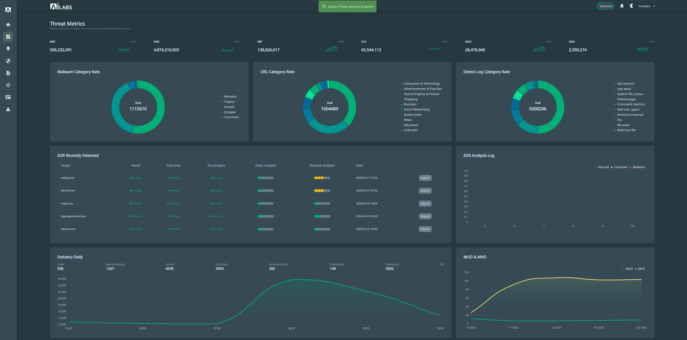
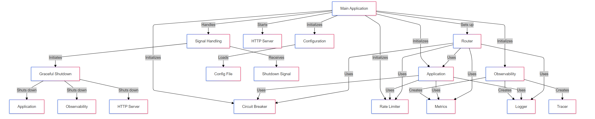
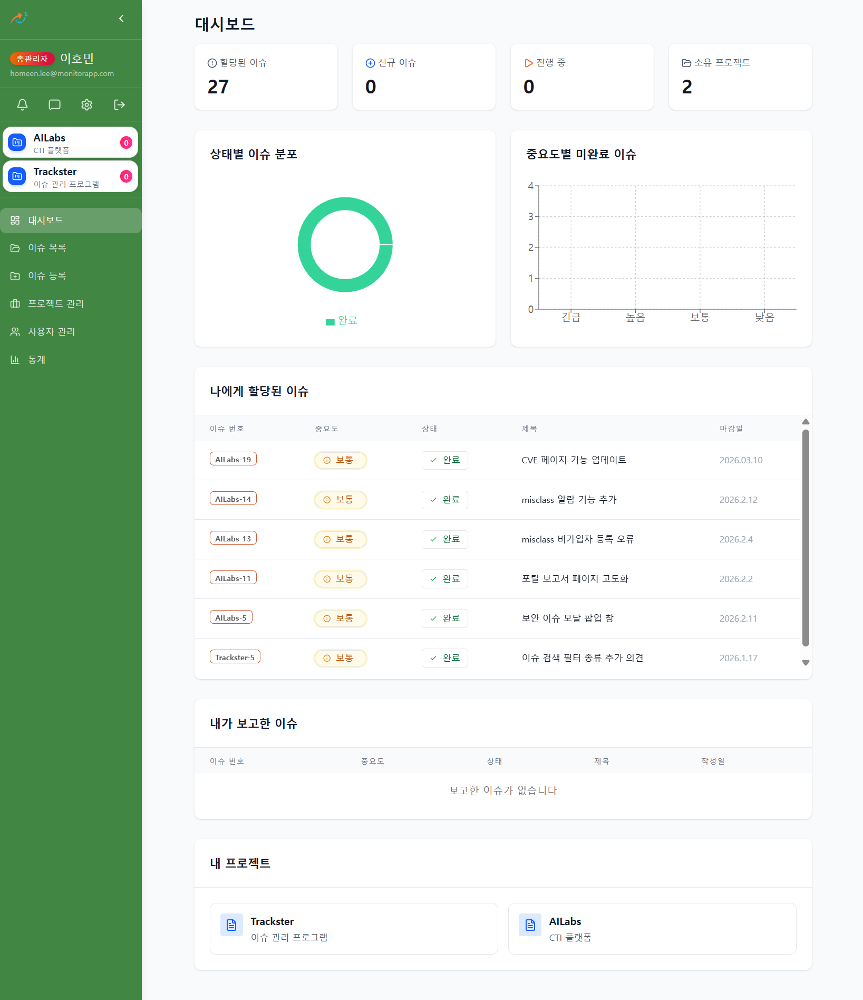
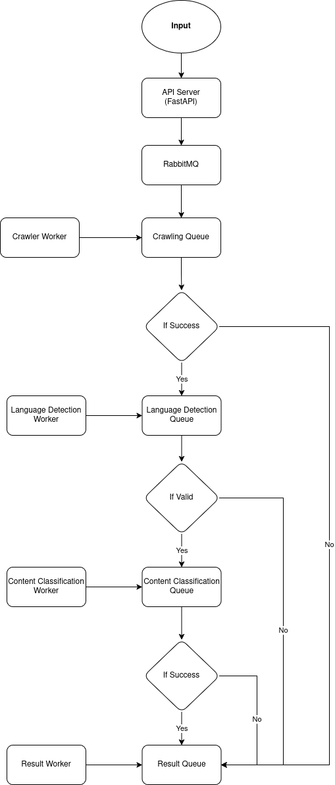

문제를 구조로 정의하고, 설계부터 구현·운영까지 책임지는 설계 주도형 풀스택 개발자 이호민입니다.
단순 기능 구현을 넘어, 확장 가능한 아키텍처와 팀의 생산성을 높이는 개발 환경을 구축하는 데 몰입합니다.
MONITORAPP | 2024.06 ~ 현재 | 풀스택 개발 및 아키텍처 설계 주도 (사이버 위협 인텔리전스 분석 플랫폼)

대용량 이기종 보안 장비 로그를 실시간으로 시각화한 ELK 기반 통합 대시보드

Go 언어 기반의 고성능 게이트웨이 및 내부 API 라우팅 아키텍처 다이어그램
사이버 위협 인텔리전스(CTI) 데이터의 특성상 악성 IP, 도메인, 연관 악성코드 등 엔티티 간의 관계가 매우 복잡하게 얽혀 있었습니다. 초기에는 이를 REST API로 구현했으나, 프론트엔드에서 API를 4~5번씩 연속 호출해야 하는 Over-fetching과 Under-fetching 문제가 발생하여 분석 상세 페이지 로딩(TTFB)이 평균 1.5초 이상 지연되었습니다.
💡 해결 과정 및 삽질기단순 DB 쿼리 튜닝이나 Redis 캐싱만으로는 근본 해결이 어렵다 판단하여, 데이터 페칭 구조 자체를 뜯어고치는 GraphQL 도입을 제안하고 주도했습니다. 도입 초기 발생한 GraphQL 특유의 N+1 문제(1개의 악성 그룹 조회 시 연관된 100개의 IoC를 개별 조회하는 현상)를 잡기 위해, 백엔드에 Dataloader 패턴을 적용하여 연관 쿼리들을 단일 쿼리(IN clause)로 배치 처리(Batching)하도록 최적화했습니다.
🏆 결과클라이언트에서 필요한 데이터만 한 번의 네트워크 요청으로 렌더링할 수 있게 되어, 평균 API 응답 시간을 1.5초에서 0.8초로 약 45% 단축시키는 쾌거를 이루었습니다.
화면(View)과 비즈니스 로직(API 통신, 상태 관리)이 강하게 결합되어 있던 기존 레거시 코드를 전면 리팩토링한 결과물입니다. React Query를 활용해 데이터 패칭과 상태 변경 로직을 Custom Hook으로 추상화하여, UI 컴포넌트는 오직 '렌더링'에만 집중하도록 단일 책임 원칙(SRP)을 준수했습니다.
이를 통해
1) 코드 가독성 및 컴포넌트 재사용성 극대화
2) 캐싱을 통한 불필요한 네트워크 요청 감소
3) Mutation 성공 시 자동 Invalidation을 통한 UI 즉각 동기화를 달성했습니다.
// usePopupQuery.ts (비즈니스 로직 & 서버 상태 관리 완벽 분리)
import { useMutation, useQuery, useQueryClient } from '@tanstack/react-query';
import axios from 'axios';
import { Popup, PopupPayload } from './types';
// 1. 이미지 업로드 로직 독립 (단일 책임 원칙)
export const useImageUpload = () => {
return useMutation({
mutationFn: async (file: File) => {
const formData = new FormData();
formData.append("file", file);
const res = await axios.post(adminGateway + "/api/common/upload", formData, {
headers: { "Content-Type": "multipart/form-data" },
});
return res.data;
},
});
};
// 2. 팝업 리스트 패칭 (React Query 캐싱 적용)
export const usePopupList = () => {
return useQuery({
queryKey: ["popupList"],
queryFn: async () => {
const res = await POSTRequestToAdmin("/popup/list", {});
return res.data as Popup[];
},
});
};
// 3. 팝업 생성 및 수정 (Optimistic Update 또는 Invalidation 처리)
export const usePopupMutation = (onClose: () => void) => {
const queryClient = useQueryClient();
return useMutation({
mutationFn: async (payload: PopupPayload) => {
const url = payload.id ? "/popup/update" : "/popup/create";
const res = await POSTRequestToAdmin(url, payload);
return res.data;
},
onSuccess: () => {
ModalForPostEditForm("success", () => {
// 성공 시 캐시 무효화하여 리스트 자동 갱신 (View 리렌더링 트리거)
queryClient.invalidateQueries({ queryKey: ["popupList"] });
onClose();
});
},
});
};사내 내부 프로젝트 | 2025.09 ~ 현재 | 1인 기획/설계/개발 단독 수행 (사내 워크플로우 이슈 추적 시스템)

Jira의 무거움을 덜어내고 사내 프로세스에 완벽하게 밀착시킨 커스텀 워크플로우 대시보드
기존에 사용하던 Jira는 기능이 방대하여 오히려 업무 속도를 저하시켰습니다. 1인 개발로 빠르게 프로토타입을 올리는 과정에서 가장 큰 난관은 '실시간 상태 동기화'였습니다. QA팀에서 이슈 상태를 'Done'으로 변경 시, 타 팀 화면에서도 새로고침 없이 즉각 반영되어야 했습니다.
💡 해결 과정서버 부하가 심한 Polling 대신 WebSocket(Socket.io)으로 전환했습니다. 하지만 다중 클라이언트 환경에서 상태 변경 이벤트가 중복 수신되어 리렌더링 폭탄(Render Storm)이 발생하는 이슈를 겪었습니다. 이를 제어하기 위해 React Query의 setQueryData를 활용, 수신된 이벤트의 Timestamp와 현재 캐시 상태를 비교하여 실제 데이터 변경이 있을 때만 낙관적 업데이트(Optimistic Update)를 수행하도록 제어했습니다. 추가로 Discord Webhook을 연동해 알림 누락을 방지했습니다.
단순한 API 개발을 넘어, 데이터베이스 스키마부터 프론트엔드 UI 컴포넌트까지 완벽하게 타입을 동기화(E2E Type Safety)하여 런타임 에러를 원천 차단한 설계입니다.
Prisma의 PromiseReturnType을 활용해 Server Action의 반환 타입을 정확히 추론하고, 이를 프론트엔드 React Query 제네릭에 주입했습니다. 이 구조에서는 DB 스키마나 백엔드 로직이 변경될 경우 프론트엔드 코드에서 즉각적인 컴파일 에러(Build-time Error)가 발생하므로, 개발 단계에서 결함을 100% 잡아내는 견고한 시스템을 보장합니다.
// 1. Prisma Schema (DB 모델링 및 타입 자동 생성의 근간)
model Issue {
id Int @id @default(autoincrement())
projectId Int @map("project_id")
title String
status IssueStatus @default(NEW)
priority Priority @default(P1)
reporterId Int @map("reporter_id")
// ... relations ...
}
// 2. Next.js Server Action (데이터 패칭 및 타입 추론 추출)
import { Prisma } from '@prisma/client';
import prisma from '@/lib/prisma';
// 🌟 핵심: Prisma가 생성한 반환 타입을 정확히 추론하여 Export (E2E 타입의 핵심)
export type IssueWithDetails = Prisma.PromiseReturnType;
export async function getIssueDetails(issueId: number) {
return await prisma.issue.findUnique({
where: { id: issueId },
include: {
reporter: { select: { name: true, email: true } },
assignee: { select: { name: true, email: true } },
tags: true,
},
});
}
// 3. Frontend Component (추론된 타입을 그대로 사용하여 프론트엔드 타입 안정성 확보)
import { useQuery } from '@tanstack/react-query';
import { getIssueDetails, IssueWithDetails } from '@/actions/issueActions';
export default function IssueDetailCard({ issueId }: { issueId: number }) {
// 제네릭에 Server Action에서 추출한 타입을 주입
const { data: issue } = useQuery({
queryKey: ['issue', issueId],
queryFn: () => getIssueDetails(issueId),
});
if (!issue) return Loading...;
return (
{/* 개발 시 issue.reporter.name 등에서 완벽한 자동완성(IntelliSense) 지원 */}
{issue.title} ({issue.status})
Reported by: {issue.reporter.name}
);
} SOCSOFT | 2024 ~ 2025 | 전체 아키텍처 및 풀스택 개발 주도 (악성 데이터 판별 비동기 AI 서비스)

FastAPI 서버와 다중 AI 워커 간의 비동기 메시지 큐잉 아키텍처
Crawling Queue로 URL 데이터 발행 (Publish)Language Queue, 실패 시 Result Queue로 전달)Classification Queue로 전달)초기에는 Node.js 웹 서버가 Python AI 엔진(FastAPI)을 REST API로 직접 호출하는 강결합 동기(Synchronous) 구조였습니다. 악성 URL 크롤링과 추론에 길게는 30초 이상 소요되었고, 트래픽이 몰리자 웹 서버의 HTTP Connection이 고갈되어 무더기로 504 Gateway Timeout 에러가 쏟아졌습니다.
💡 해결 과정웹 서버와 AI 엔진의 라이프사이클 분리를 위해 RabbitMQ 기반 메시지 브로커를 전격 도입했습니다. 웹 서버는 요청을 받으면 큐에 메시지만 던지고 즉시 200 OK를 반환하며, Python 워커들은 가용 리소스만큼만 큐에서 메시지를 가져가는(Pull) 방식으로 아키텍처를 전면 수정했습니다. 또한, 끊어진 HTTP 응답 대신 WebSocket을 도입하여 AI 분석 생애주기(대기-크롤링-탐지-분석-완료)를 클라이언트 화면에 실시간 프로그레스 바로 동기화시켰습니다.
🏆 결과일 최대 5만 건의 트래픽 폭주 시에도 큐에 데이터가 안전하게 적재되며 서버 다운 없이 순차 처리하는 가용성 99.9%의 견고한 시스템을 완성했습니다. 이를 인정받아 정부 바우처 우수 사례로 선정되고, 4.5억 원의 매출 달성을 견인했습니다.